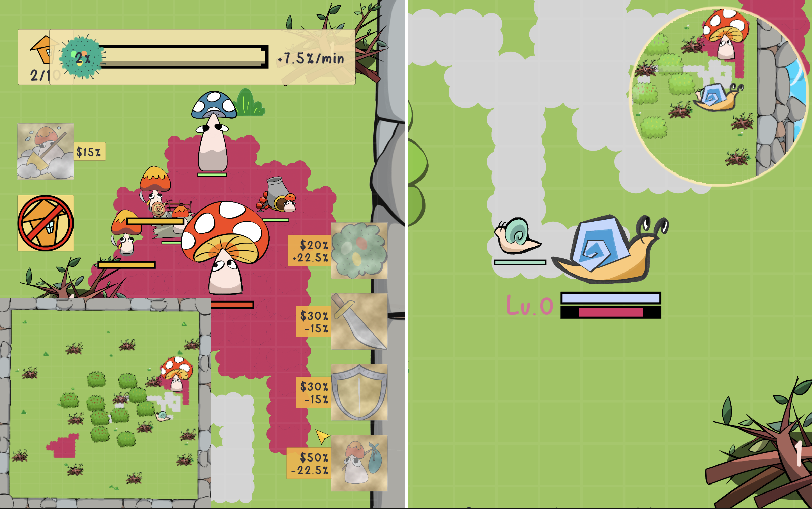
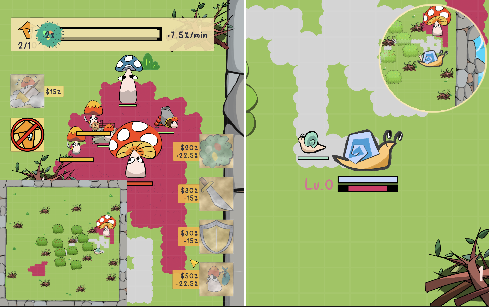
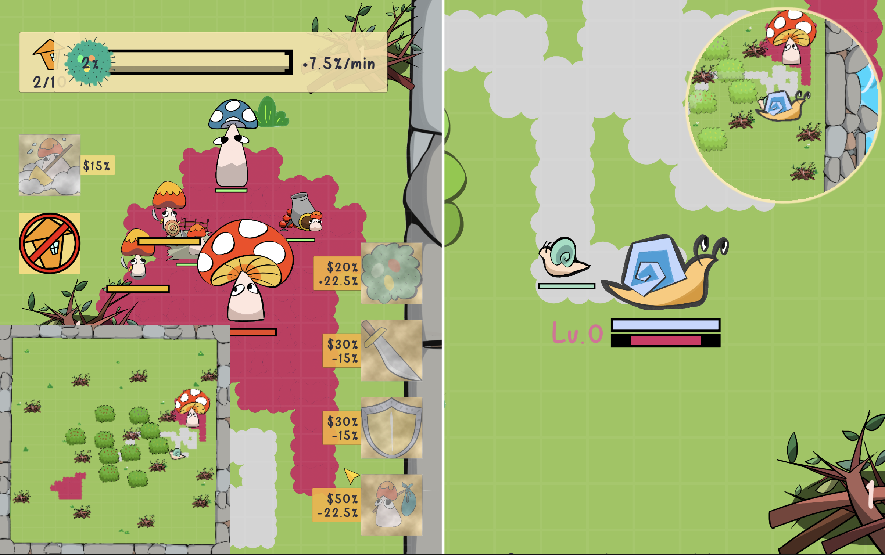
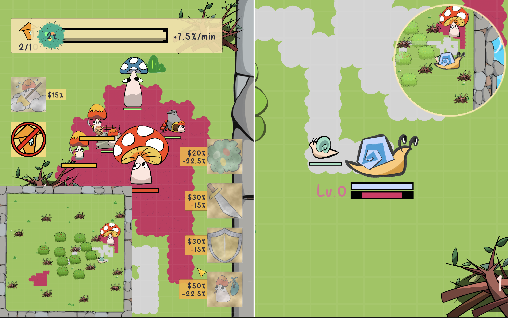

 

In this two-player asymmetric RTS game, players control Mushroom and Snail as two opposing species that aim to destroy each other in an enclosed natural environment with limited resources. Each side has unique abilities and tools to help it achieve dominance over the other.
This game was jointly developed by Xiaoyu Liu, Chengfan Li, Yushi She, and me. I implemented the hyphae/mucus and their functionalities, the auto-attck features of little snail & mushroom units, the damage-health system, etc. I also created the in-game art assets, including the sprites, the menu, the CGs, etc.
This project is based on a non-URP 2D Unity template. We made use of an RTS gameplay framework developed by Code Monkey. All images and downloadable archives are hosted on the GitHub repository.
To download the game: Windows download MacOS download

Crazy Canvas is a two-player casual game developed using Unity and C# scripts. In this game, players are encouraged to sprint toward gameobjects and the opponent. Doing so allows players color the ground, which leads to a fancy visual result.
I developed the game in 2 weeks. I designed different maps, various special effects, and the art style. I also implemented the core mechanisms.
The game was developed using the programming language C#, a robust and widely-used programming language in the gaming industry, and Unity, a popular game engine that provides a suite of tools and features for cross-platform game development. In this game, I explored various functionalities of Unity such as the partical system and the UI panel, to improve players' game experience. The WebGL build of the game is hosted on Github Page, a web hosting service that allows developers to host static web pages directly from a GitHub repository.


This is a Unity remaster of the classic 1986 game The Legend of Zelda, with a customized extra level that features new maps, weapons, and mechanisms.
Xiaoyu Liu and I developed the remaster in 3 weeks. I am responsible for implementing various enemies, camera/room transitions, doorways and blockers, enemy/collectable power-up placements, customized level map generation, and relevant testing/bug fixes. We worked together on audio implementation and customized level design.
The remaster was developed using the programming language C#, a robust and widely-used programming language in the gaming industry, and the Unity, a popular game engine that provides a suite of tools and features for cross-platform game development. The remaster utilizes the capabilities of Unity to bring a modern touch to the classic game while maintaining the original charm and gameplay. The WebGL build of the game is hosted on Github Page, a web hosting service that allows developers to host static web pages directly from a GitHub repository.